Harry-Potter
c'est quoi ?
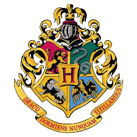
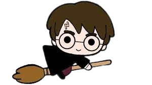
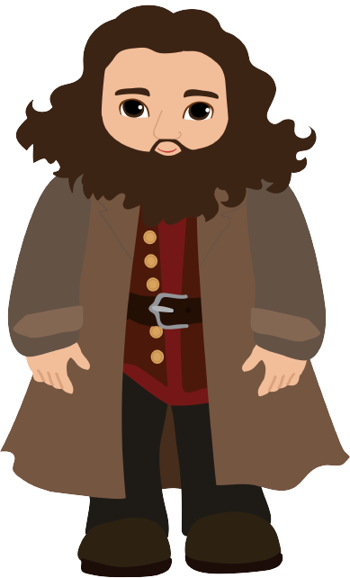
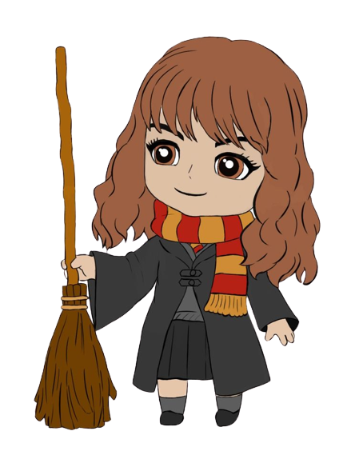
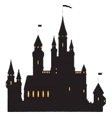
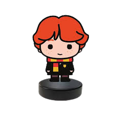
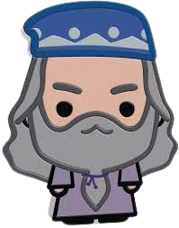
- Poudlard est divisé en quatre maisons, Gryffondor, Poufsouffle, Serdaigle et Serpentard qui portent le nom de leur fondateur.
Le Choixpeau magique attribue, durant la cérémonie de la Répartition, les élèves de première année à une maison en fonction de
leur personnalité pour toute leur scolarité. Les maisons s'affrontent annuellement pour la coupe des Quatre Maisons ainsi que
pour la coupe de Quidditch des Quatre Maisons. Chaque maison possède une salle commune et des qualités qui lui sont propres.
- Harry Potter est une série littéraire de low fantasy écrite par l'auteure britannique J. K. Rowling. La série de sept romans
raconte les aventures d'un jeune sorcier nommé Harry Potter et de ses amis Ron Weasley et Hermione Granger à l'école de
sorcellerie Poudlard, dirigée par Albus Dumbledore. L'intrigue principale de la série met en scène le combat de Harry contre
Lord Voldemort, un mage noir à la recherche de l'immortalité ayant autrefois assassiné les parents du garçon.
 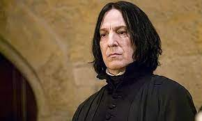
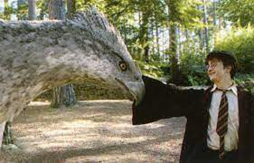
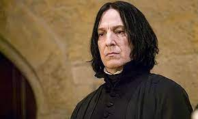
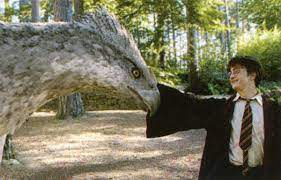